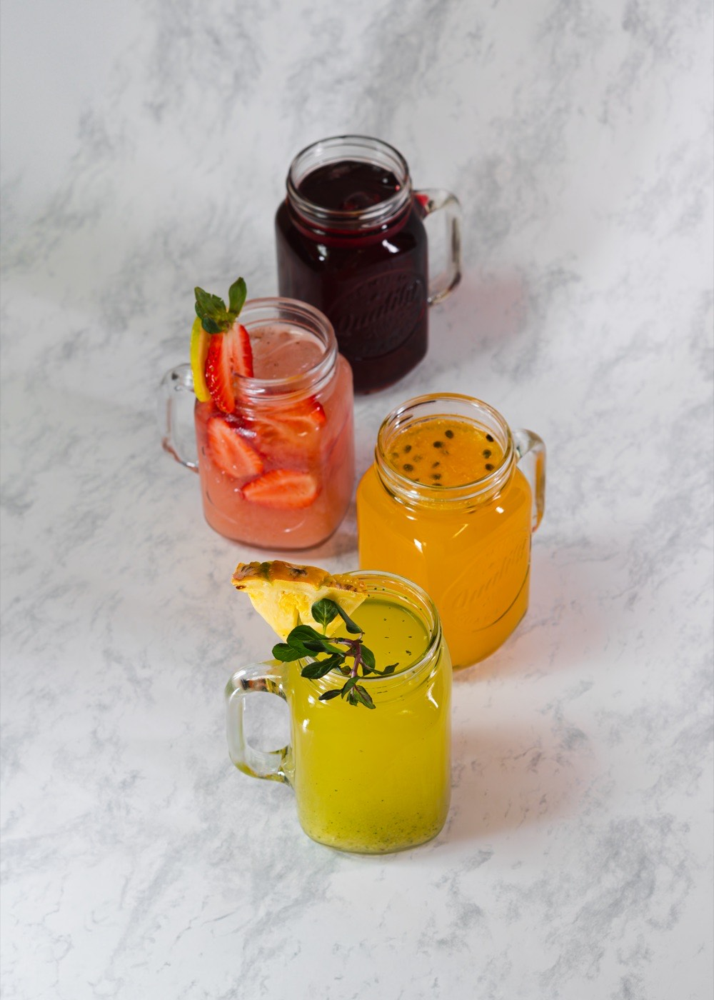
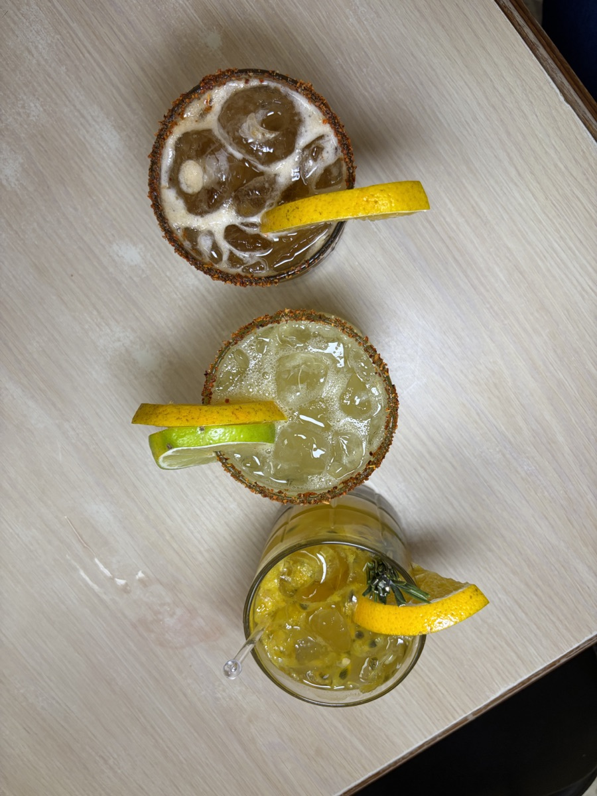
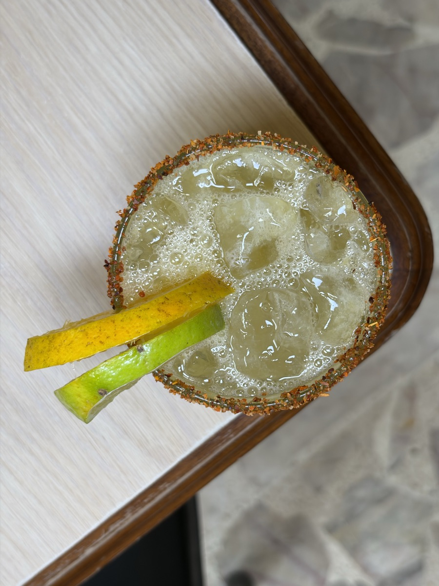
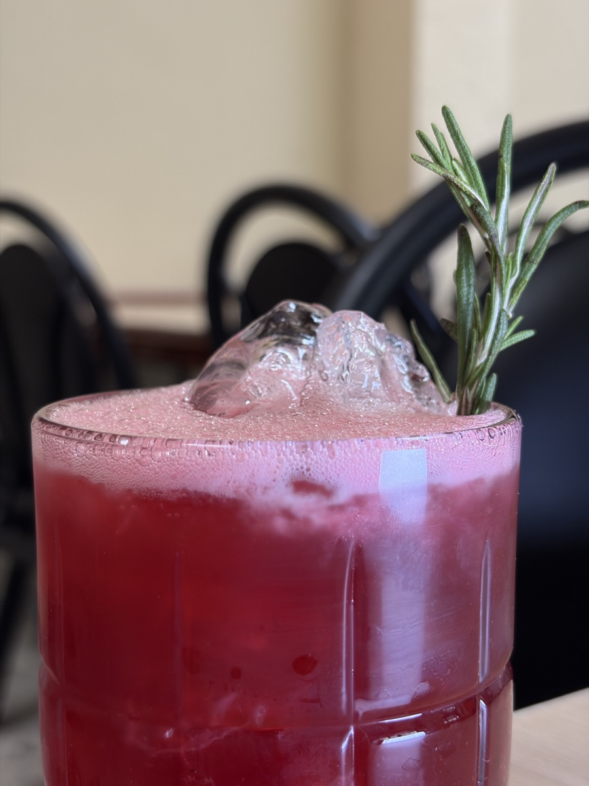
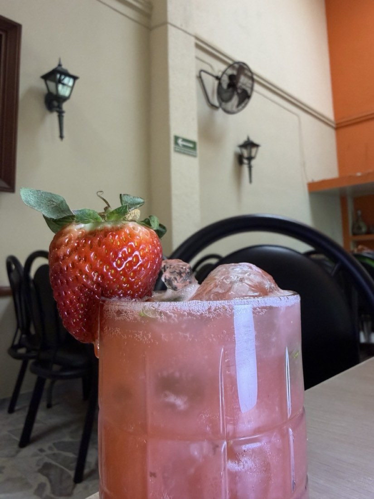

01
Birria de res tatemada
Cocida ocho horas a leña, servida con consomé, cebolla, cilantro, limón y tortillas a mano.
Especialidad de la casaBirriería tradicional · Desde mil novecientos setenta y ocho
Cuarenta y siete años cocinando a fuego lento la receta que cruzó del pueblo de Cócula a las mesas de Guadalajara. Sin atajos.

Capítulo uno
Dicen los viejos que la birria nació en Cócula, un pueblo al sur de Jalisco donde la carne se cocía bajo tierra, envuelta en hojas de maguey, durante una noche entera. Esa misma receta, sin más vueltas, es la que servimos desde hace casi medio siglo.
Birriería Cócula abrió en 1978 con tres recetas y un comal. Hoy seguimos siendo familia, seguimos pidiendo el chivo del mismo rancho y seguimos creyendo que una birria bien hecha no se apura: se espera.
Conoce nuestra mesa →

Capítulo dos · La carta
Cocida ocho horas a leña, servida con consomé, cebolla, cilantro, limón y tortillas a mano.
Especialidad de la casa
La receta del 78, intacta. Carne suave, caldo limpio.

Tortilla pasada por consomé, queso fundido, carne deshebrada.

Crujientes por fuera, jugosos por dentro. Salsa de la casa.

Caldo concentrado, garbanzo, hueso de res, cilantro fresco.

Queso dorado al comal, relleno de birria deshebrada y cebolla morada.
Para empezar
Masa gruesa, frijol, birria y crema de rancho.

Masa fresca rellena, frita al momento.

Tortilla gruesa con manteca, salsa y queso fresco.

Pollo deshebrado, lechuga, crema y aguacate.

Selección del chef para compartir.

Mezcla de hojas, queso panela, nuez tostada y vinagreta de jamaica.
Fresco
Arroz, frijol, aguacate y birria deshebrada.

Cebollitas, frijoles charros, guacamole.

Queso, jamón serrano, salsa de chile pasilla.

Birria, panela frita, tortillas a mano y salsas.

Pregunta a tu mesero.

Queso panela dorado al comal, salsa molcajeteada y tortillas a mano.
Imperdible
Con nopalito asado y pico de gallo.

Romero, tomillo, aceite de oliva, ajo confitado.

Adobo de chile guajillo, semillas tostadas.

Panela, oaxaca, cotija y mermelada de la casa.

Mezcal joven, jugo de limón, jarabe de agave, sal de gusano.
Firma
Reducción de jamaica, mezcal espadín, escarcha de chile.

Pulpa fresca, picosita y dulce.

Pepino, hierbabuena, limón, mezcal joven.

Mango ataulfo, chile piquín, escarcha tajín.

Espadín, tobalá, ensamble. Pregunta por la selección.
Capítulo tres · La barra
Trabajamos con mezcaleros pequeños de Oaxaca y Jalisco. Cada mezcalita lleva fruta de temporada, agave joven y la sal que mandan los abuelos.
«El mezcal no se toma de un trago, se besa.»


Sala & mesa


Capítulo cuatro
Dirección
Calz. del Federalismo Norte 1374
Col. Monumental · C.P. 44260
Guadalajara, Jalisco
Horario
Lun – Jue · 8:00 a 20:00
Vie – Dom · 8:00 a 22:00
Sin reservación los fines de semana
Teléfono
Síguenos